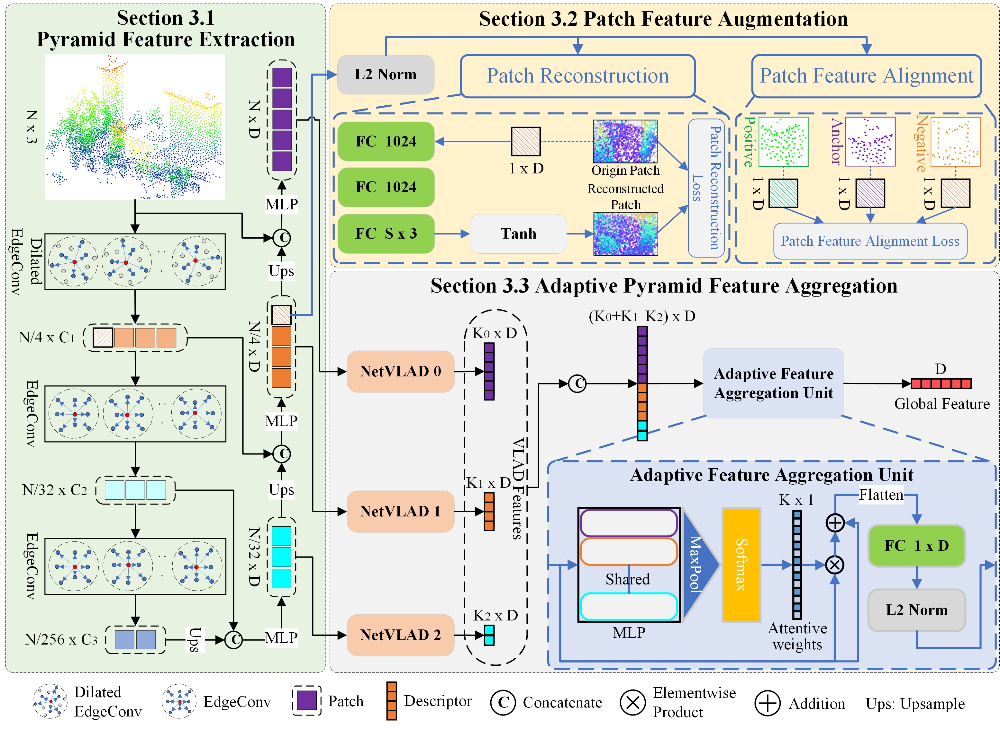

Abstract
Point Cloud Place Recognition (PCPR) in street scenesis an essential task in the fields of autonomous driving, robot navigation, and urban map updating. However, the domain gap between heterogeneous point clouds and the difficulty of feature characterization in large-scale complex street scenes pose significant challenges for existing PCPR methods. Most PCPR methods only take into account point clouds collected by the same platforms and sensors, thus they are with poor domain transferability. In this paper, we propose PatchAugNet, which utilizes patch feature augmentation and adaptive pyramid feature aggregation to achieve better performance and generalizability for Heterogeneous Point Cloud-based Place Recognition (HPCPR) tasks. Firstly, multi-scale local features are extracted by the pyramid feature extraction module. Secondly, local features are enhanced by the patch feature augmentation module to overcome the domain gap problem and achieve better feature representation as well as network generalizability. Finally, a global feature is generated using an adaptive pyramid feature aggregation module, which automatically adjusts and balances the proportion of intra-scale and inter-scale features according to the scene content. To evaluate the performance of PatchAugNet, a large-scale heterogeneous point cloud dataset consisting of high-precision Mobile Laser Scanning (MLS) point clouds and helmet-mounted Portable Laser Scanning (PLS) point clouds is collected. The dataset covers various street scenes with a length of over 20km. The comprehensive experimental results indicate that PatchAugNet achieves State-Of-The-Art (SOTA) performance with 83.43% recall@top1% and 60.34% recall@top1 on unseen large-scale street scenes, outperforming existing SOTA PCPR methods by +9.57 recall@top1% and +15.50 recall@top1, while exhibiting better generalizability.

PatchAugNet, based on patch feature augmentation and adaptive pyramid feature aggregation, achieves better performance and generalizability for Heterogeneous Point Cloud-based Place Recognition tasks.
1)The patch feature augmentation module greatly overcomes the domain gap problem and achieves better feature representation as well as network generalization.
2)The adaptive pyramid feature aggregation module automatically adjusts and balance the proportion of intra-scale and inter-scale features in feature aggregation according to the scene content, which effectively improves the discrimination of global features.
Acknowledgements:
We borrow this template from FreeReg.